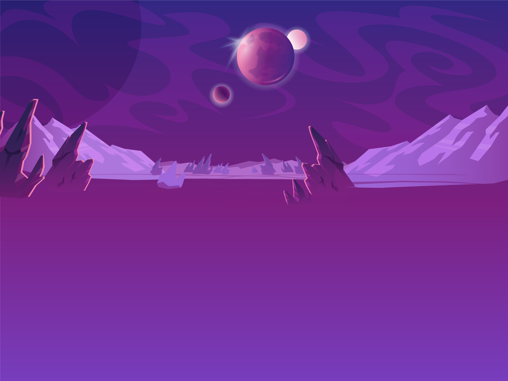
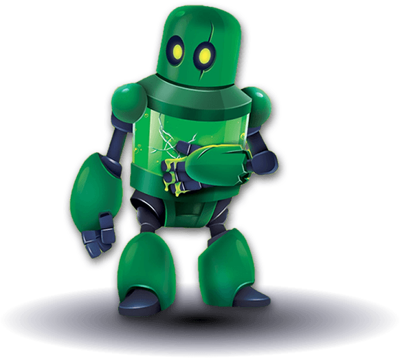
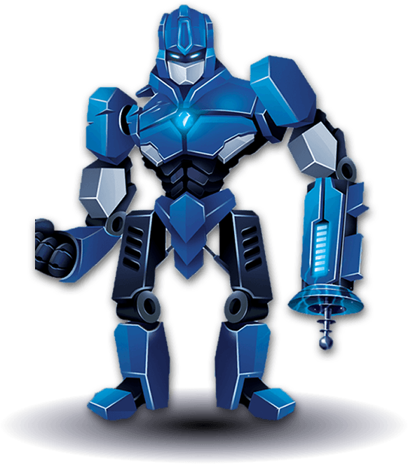
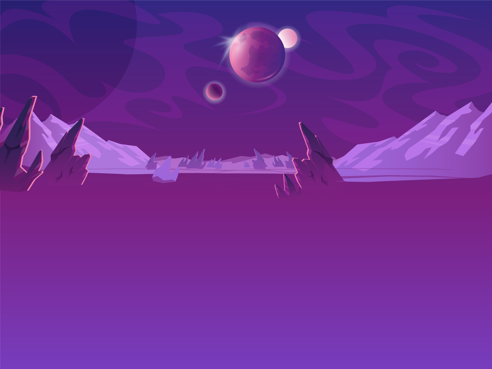
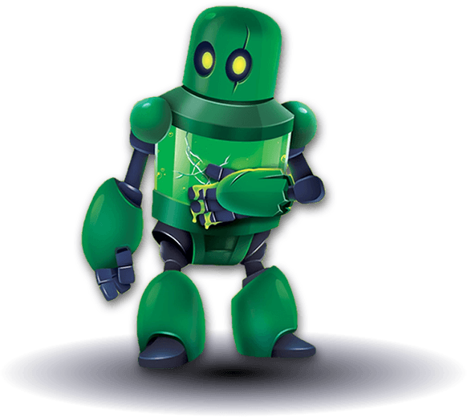
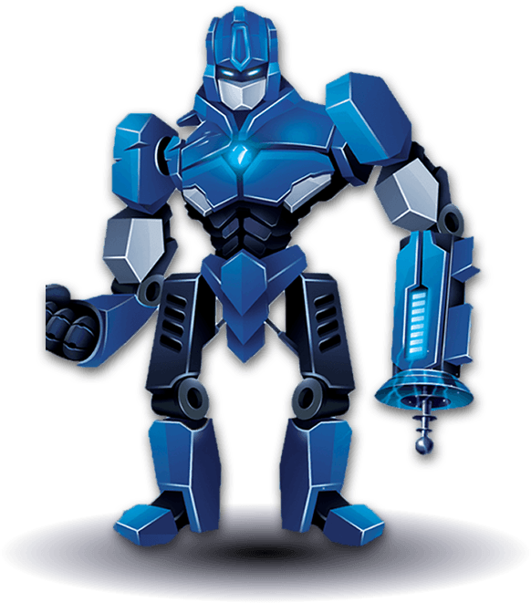

×
Welcome to Two Robots
If you're coming from the front page, this is what artificial intelligence told us people would want:
- 🧤 "Really Sweet Gloves"
- 👽 "Players Being Abducted"
- ❄️ "Stuff Getting Frozen"
- 🚀 "Cool Freaking Gunships"
So we just went with that and BOOM, Two Robots the Card Game was born. 😆
Hello there! Welcome to the Two Robots blog and universe.
We plan to use this platform to deliver the latest content within our game including history,
updates on production, and the creative process.
Additionally -- we plan on dropping any knowledge on our findings with fulfillment companies
and the card printing process. We are using this blog to be the center of gravity for our
digital house. We hope you enjoy it :)
Where did Two Robots Come From?
As pretty hardcore board gamers, the Two Robots team all sit down about once a week for
a board game night. Over the years we have played many games, from party games to hero
based games like Gloomhaven. What we have noticed, and something that we desired,
is a party game that is quick but also has a lot of depth in strategy.
We wanted it to be set in the future, with a seriously killer storyline and graphics to boot.
When we first set out to start this project, we were completely unaware of how difficult it is
to come up with a game that is actually fun. Future blog posts will be detailing the creative
effort, so you all can experience what it’s like to create a game! Through hours of play testing
with friends, family, and even strangers (thanks Craigslist!) we think we have come up with
something great. We can't wait to share this world with you, from the story to the game mechanics,
to eventually seeing all of you play it.
 




